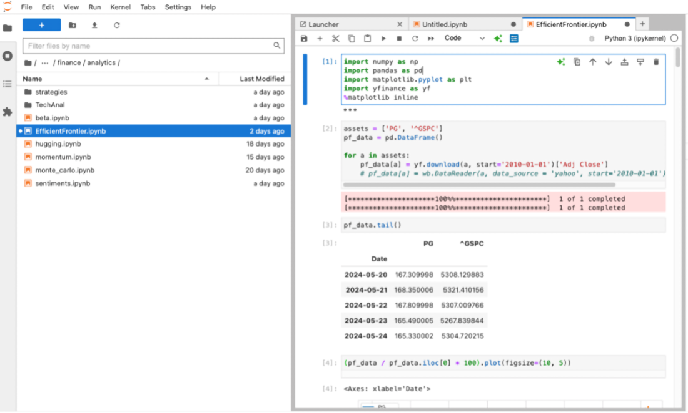
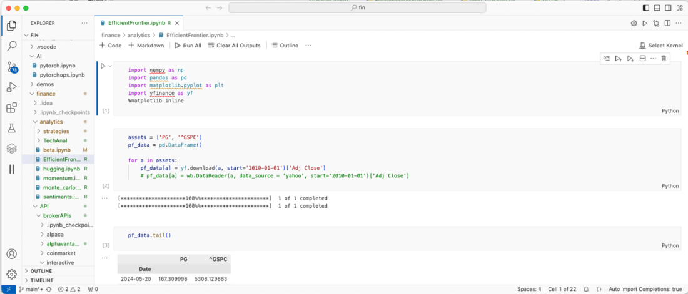
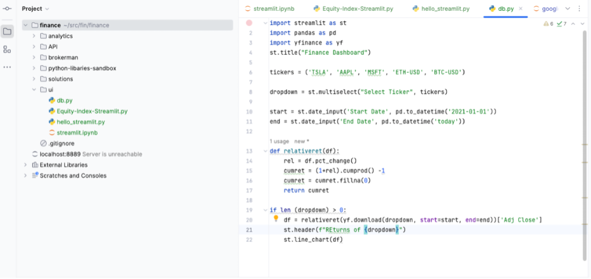

Some of you may prefer cloud services, while others of you prefer to use your own devices. Many programmers are familiar with specific tools to replace the ones shown in the book, allowing them to choose their final configuration independently. In this appendix, we list options for each category. We’ll demonstrate how to integrate cloud services, manage source code, select development environments, and export data.
To work with financial assets, you’ll need to register with a broker or exchange. In this book, I’ll demonstrate using Alpaca, Interactive Brokers, and Binance. You’re free to use other providers, but in that case, you’ll need to handle data access and integration on your own. Be aware that because these are platforms that host financial data, they require some extra security procedures such as a Know Your Customer (KYC) process. Suppose you feel uncomfortable with using a broker as a backend, or your broker doesn’t support remote access through an API. In that case, you can always create a small relational database that contains tables with all your positions.
This appendix highlights only the basic actions, but doesn’t explain all the details required for possible environments. For detailed instructions on setting up a framework or service for your specific environment, do some web research or consult a large language model (LLM).
Python is the lingua franca of data analytics. It provides key data structures and features to facilitate efficient data analysis. Since its beginnings in the 1990s, Python has developed a growing library of tools that excel in all aspects of data exploration, including data retrieval and visualization.
Many operating systems come with a preinstalled Python version. You can use this Python installation locally or create a virtual environment for your exploration. Most experts recommend the latter because it allows you to install as many custom libraries as you want and update each library without risking conflicts with other libraries for different use cases.
In this book, we use Python 3.13, the latest version available at the time of writing. The Python community provides new versions every year. As Python is mature, functional changes that remove backward compatibility are rare. In most cases, the exercises should run with slightly older or newer versions of the programming language. You can determine your Python version by running the following command in the console:
Python ––version
If you don’t have a Python interpreter installed, follow the instructions on www.python.org to set up your Python environment. You can also check the availability of the package manager pip on your system, which allows you to install libraries for data exploration. For example, you can install these three libraries, which we frequently use in this book, in this way:
pip install yfinance pandas numpy
This book relies heavily on the pandas and matplotlib libraries in most samples. If you still have a lot to learn about using Python or these two libraries, we recommend catching up before delving into programming examples.
Note Developers can port the code in this book to other languages if they offer similar libraries to Python. Just don’t underestimate the effort required, as some libraries, such as a port of yfinance, might not be available for every language.
We list the libraries used in this book in table A.1. Be aware that for some of these tools, you need to register on a platform and get API keys.
The most crucial section of the whole setup is securing API keys and secrets. An unauthorized person who gets access to them can cause harm. For that reason, we need to protect them as much as possible. Listing A.1 uses the python-dotenv library to load secret keys from a file named .env.
import os
import requests
from dotenv import load_dotenv
load_dotenv()
NOTION_TOKEN = os.getenv("doc.notion.api")
DATABASE_ID = os.getenv("doc.notion.db")
Suppose the .env file in the directory where the code is executed contains key-value pairs assigning values to the keys doc.notion.api and doc.notion.db. In that case, the library loads the values and later assigns them to variables. We can apply these concepts to all keys that we want to load, including usernames and passwords.
Be aware that python-dotenv is just a minimum-security measure and helps you to separate hardcoded API keys from the source code. We can use a secrets manager, which takes security even one step further. If someone runs code locally on their computer, they can use HashiCorp Vault. In addition, there are custom solutions for each environment. If you’re using a Mac, take a look at the keyring library. Be sure to invest some time in exploring the best way to secure your keys as much as possible based on your environment.
The choice of a remote git server, such as GitHub or GitLab, doesn’t make a difference. Both solutions do the job, and deciding which one to use depends on personal preference.
While we don’t need to explain to programmers the benefits of a source code repository, and most programmers will be able to create their own repositories, we need to highlight the risk of accidentally committing API keys in plain text. Some remote git repositories offer features to detect if keys are pushed to a server by mistake, and you can also use private Git repositories to mitigate the possible impact of pushing keys by accident. We can’t stress enough that the best protection for your keys is to prevent them from leaving your secured environment from the beginning.
Note When using API keys to trade on financial platforms, it’s always better to be safe than sorry. If you feel that there’s even the slightest risk that an unauthorized party could gain access to the keys, change them. All platforms offer methods to make access keys invalid.
One way to prevent a file from being uploaded to a remote cloud repository is to add the file names containing the keys, such as the .env file, as shown previously, to the list of files your source code repository will ignore. A git-add will check the content of a .gitignore file and ignore all files and directories that match the patterns specified in the file.
In this book, we use Jupyter Notebooks. A Jupyter Notebook is an interactive environment that executes code in single cells. It can be run in its native environment, Jupyter, or a hosted setup using an Integrated Development Environment (IDE). What makes Jupyter Notebooks unique is that they provide an interactive environment. You can execute code in one cell and use the results of earlier executions in a different cell. This interactivity offers flexibility and is particularly well-suited for research-oriented approaches. Let’s explore some of the typical environments.
Jupyter can be installed as a Python standalone library using the pip package manager. However, developers can use Jupyter when it’s integrated into a development environment. Figure A.1 illustrates a Jupyter Notebook running in Anaconda, an open source data science and AI platform that supports Python and R programming languages.

Anaconda provides an entire environment for data scientists, including the package manager conda, which follows similar principles to pip. Refer to the installation routine on the Anaconda web page (https://mng.bz/Rwoa).
Many cloud-hosted environments offer notebooks, including AWS Sagemaker, Azure Machine Learning, Google Colab, and JetBrains Datalore. Developers who don’t want to install anything in their local environment can use these hosted environments.
Visual Studio Code (VS Code), shown in figure A.2, is a standard IDE that runs on most operating systems provided by Microsoft. It’s also trendy among Mac and Linux users because it’s free and offers many functionalities. Download and install VS Code for your operating system based on the vendor’s instructions at https://mng.bz/15BR.

Many developers prefer PyCharm, an IDE specifically designed for Python programmers (figure A.3). PyCharm offers numerous features of interest to Python programmers. It’s available in a paid pro edition and a free community edition. The producer JetBrains also provides other useful developer tools, such as DataGrip, to manage SQL databases.

Install PyCharm according to the vendor’s instructions. PyCharm Pro isn’t required, but it can facilitate some programming activities.
This book demonstrates how to access and store financial data using databases and APIs securely. In the examples, we run data science notebooks on a local system. Alternatively, you can execute everything in cloud services that allow hosting Jupyter Notebooks.
Some programmers shy away from using one of the big cloud providers because they need to follow a KYC process and provide credit card information for registration, and not everyone feels comfortable doing this for private projects. For each service you use locally, you can replace it with a cloud-based option. Besides options hosted on large cloud providers, there are likely free versions from smaller providers that don’t require any credit card information.
The first item to replace, if you want to get more advanced, is likely the SQLite database we use in this book, which is excellent for explanatory scenarios. For more advanced scenarios, there are limitations, however. One reference database provider that allows you to use a simple database setup without a credit card is Supabase.
We can use all forms of relational databases hosted on cloud providers. Of course, cloud developers must also be familiar with opening access ports and setting up and configuring databases in the cloud. Every cloud provider has extensive material on how to do this.
This book uses the SQL Alchemy library to read and write database data. A developer, therefore, only needs to replace the connection string if they want to change the backend.
Users who use a public cloud can also use the secrets managers provided by these platforms. We can then use these libraries from Python scripts or command-line tools. Listing A.2 shows how to use the Boto3 library to access AWS Secrets Manager. Each big cloud provider has its own secrets management solution. Pick the one you like best.
client = boto3.client('secretsmanager')
try:
response = client.get_secret_value(SecretId=secret_name)
secret = json.loads(response['SecretString'])
return secret
except Exception as e:
print(f"Error retrieving secret: {e}")
return None
While the secret manager solutions from public cloud providers are secure, keep in mind that cloud providers offer more sophisticated features to minimize risks. Cloud endpoints may, for instance, accept only requests from limited IP ranges if security is configured accordingly.
In this book, we export data to note-taking platforms such as Notion or Google Sheets. Both frameworks allow export with keys. You can access these services by creating an account for each of them.
You can replace these two platforms with all kinds of alternatives. The recommendation is to use a centralized repository to store all research and responses from LLMs, as this allows you to have a structured study. If you want to reassess a decision you’ve made some time ago based on an LLM response, you can also use that response and submit it as part of a prompt to ask an LLM if it still agrees with the original assessment.
Ever since LLMs went mainstream in IT, vendors have been racing to release versioned models to capture market share. We use four LLMs in this book:
Using frameworks such as LangChain, we unify the API and don’t have to manage multiple vendor APIs. What we still need to prepare for is generating accounts on the platforms, obtaining access keys, and occasionally purchasing a minimum number of credits. The detailed process of creating accounts and creating keys is out of this book’s scope. LLM chatbots typically do a great job explaining how to create an account on their platform and generate API keys, which can be used in Python.
We use brokers for stocks and bonds, and we use exchanges for stocks. Chapter 11 explains the difference between these categories. In this book, we use three platforms to trade assets and gather data from them:
As many different brokers and exchanges are available worldwide, we must be aware that every financial platform requires a KYC process, which requires customers to provide proof of their identity. This procedure is for your protection as investors. Verified users who must authenticate to use a system are less likely to attempt fraud.
While two platforms use API keys to authenticate, Interactive Brokers takes a different approach. Interactive Brokers uses a local installation of a tool called Trader Workstation (TWS) to connect with a Python API. Sometimes, you need to configure the API access with the TWS. Interactive Brokers provides information tailored to your operating system.